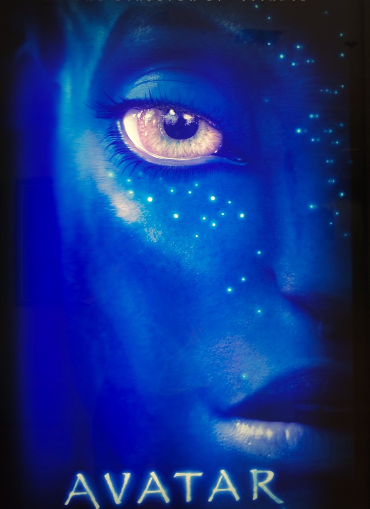

Película Avatar
En un exuberante planeta llamado Pandora viven los Na'vi, seres que aparentan ser primitivos pero que en realidad son muy evolucionados. Debido a que el ambiente de Pandora es venenoso, los híbridos humanos/Na'vi, llamados Avatares, están relacionados con las mentes humanas, lo que les permite moverse libremente por Pandora. Jake Sully, un exinfante de marina paralítico se transforma a través de un Avatar, y se enamora de una mujer Na'vi